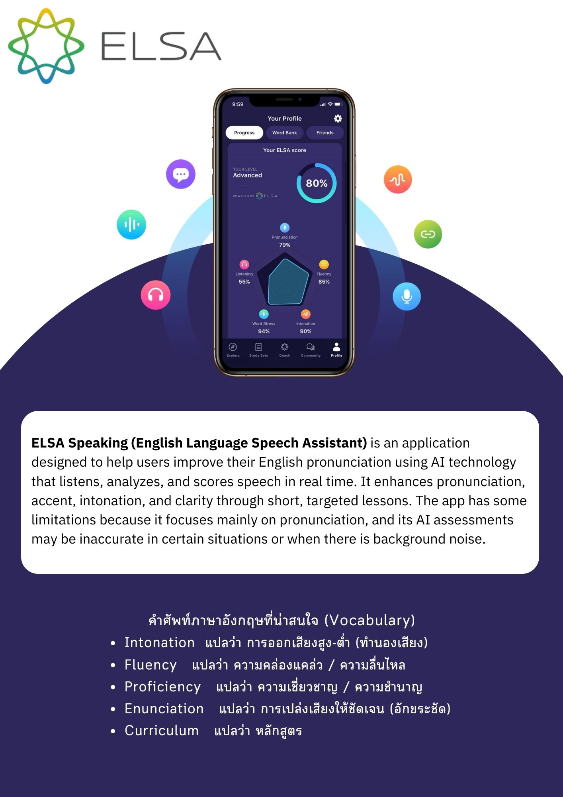
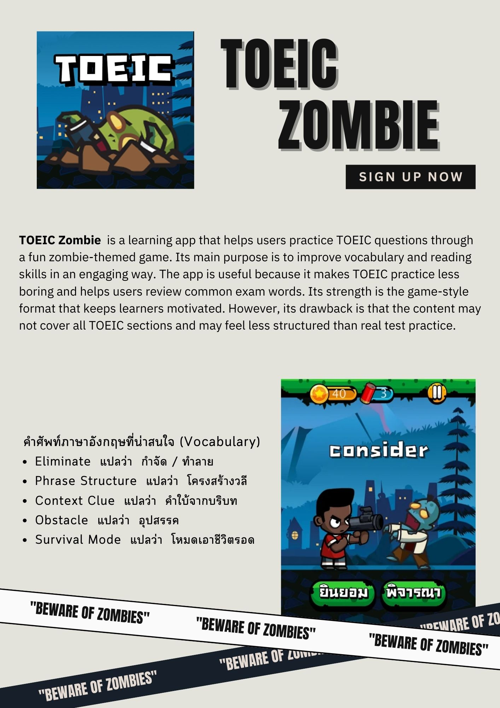
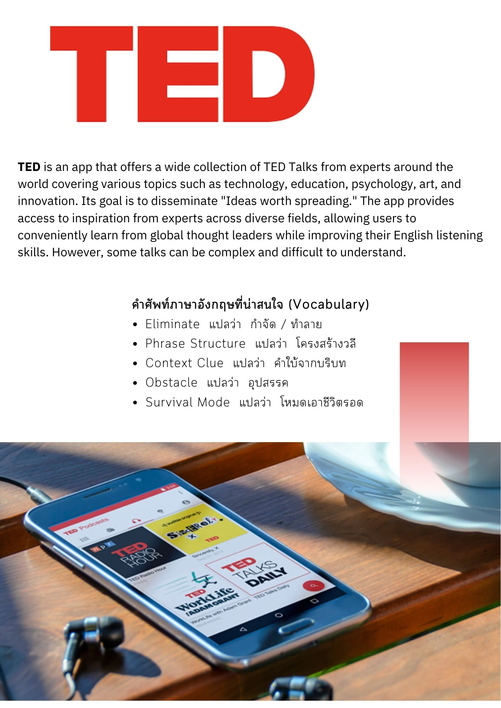
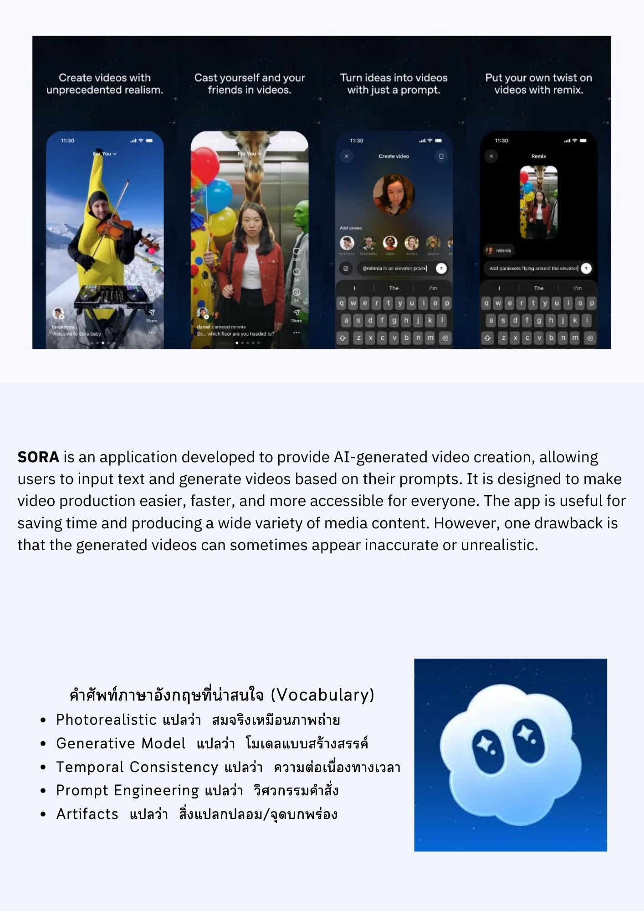

การออกแบบอินโฟกราฟิกสรุปข้อมูลแอปพลิเคชัน (Application Review Infographics)
ผลงานการออกแบบสื่อสรุปข้อมูล (Infographic) เพื่อแนะนำแอปพลิเคชันที่มีประโยชน์ในด้านต่างๆ เช่น การศึกษา (ELSA, TOEIC), เทคโนโลยี (SORA) และสุขภาพ (Flo)
โดยในแต่ละชิ้นงานได้ทำการ
- วิเคราะห์ข้อมูล: สรุปฟีเจอร์หลัก จุดแข็ง และข้อจำกัดของแอปพลิเคชันให้เข้าใจง่ายภายในหน้าเดียว
- รวบรวมคำศัพท์: คัดเลือกคำศัพท์ภาษาอังกฤษ (Vocabulary) ที่น่าสนใจที่เกี่ยวข้องกับแอปนั้นๆ เพื่อส่งเสริมการเรียนรู้
- ออกแบบจัดวาง: ใช้โทนสีและองค์ประกอบภาพที่สอดคล้องกับเอกลักษณ์ของแต่ละแอปพลิเคชัน"
ทักษะที่ใช้ (Skills):
- การจับใจความและย่อยข้อมูล (Data Summarization)
- การออกแบบกราฟิกและจัดองค์ประกอบ (Graphic Design & Layout)
- คำศัพท์ภาษาอังกฤษพื้นฐาน (Basic English Vocabulary)



